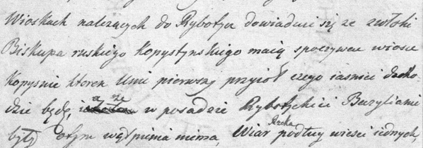

Kopysno [1] musiało istnieć już w XIV * wieku, gdyż jak wynika z dokumentu z 12 marca 1408 r. [pisany po rusku], kiedy król Władysław Jagiełło nadał Józefowi Bieduniowi, swemu rycerzowi za jego wierną służbę miejscowość Kopysno, były już tam obiekty, które nie mogły powstać w krótkim okresie. W akcie czytamy o nadaniu "horodyszcza Kopystno, cerkwi pw. Pokrowy Matki Bożej, dworzyszcza pustego zwanego Bodnarskie pod horodyszczem, lasu Struczyna, łąk Mochowisko Małe i Duże, żeby służyły dworzyszczu." ("Акты Южной и Западной Руси". Т.1, С.-Петербург,1863, С.6 - sedmitza.ru, plik pdf, s.6; "Kopiariusz przywilejów, dekretów i różnych akt odnoszących się do dóbr rodziny Kmitów z lat 1397-1601 - www.dbc.wroc.pl [1a], [1b] . W zamian za to Józef Biedun i jego potomkowie m.in. mieli być gotowi oddać na służbę w wojsku dwóch łuczników. Prawdopodobnie, kierując się nazwą wsi, przyjął on później nazwisko Kopystyński, z którym utożsamiali się wszyscy jego potomkowie. Jak twierdzi Pamwo Berynda, Biedun był człowiekiem silnym i wojowniczym (zob. irbis-nbuv.gov.ua - plik pdf, s.68; litopys.org.ua).
Z aktu nadania wsi dowiadujemy się, że były w niej stawy, a mieszkańcy trudnili się pszczelarstwem - w leśnych dąbrowach funkcjonowały pasieki **.

Fragment dokumentu nadania wsi - www.dbc.wroc.pl [1b]
Kopysno pierwotnie było lokowane na prawie ruskim (wg Akta... co najmniej do 1473 r.). W późniejszym okresie miejscowość podlegała prawu wołoskiemu.
13 marca 1415 r. starosta ruski Iwan Śremski (Iwan z Obichowa - wikipedia.org) w obecności świadków dokonał rozgraniczenia gruntów królewskich miejscowości Brylińce od Kopysna, będącego we władaniu rodziny Kopystyńskich (Zachary, Lewkow, Malew). Potwierdza to tekst pisany w języku staroruskim (starocerkiewnym):

Źródło: Олег Купчинський - "Забуті та невідомі староукраїнські грамоти XIV — першої половини XV ст." - zob. chtyvo.org.ua; www.dbc.wroc.pl (strony 191-192)
W roku 1490 właścicielem Kopysna był Kuźma Kopysteński (sanockabibliotekacyfrowa.pl - s. 103, skan 111). Przez kilka wieków wieś stanowiła gniazdo rodu Kopystyńskich [2] ***, którego najwybitniejszym przedstawicielem był Michał Kopystyński (zm. 1609 r. - Stanisław Kryciński “Słownik Krajoznawczo-Historyczny”, Warszawa 1992; zob. genealogia.okiem.pl, vysochanskiy-sas.com, irbis-nbuv.gov.ua - plik pdf, ss. 67-81), ostatni prawosławny biskup (władyka) przemyski, zagorzały przeciwnik Unii brzeskiej (Więcej books.google.pl - Kwartalnik Historyczny - str. 547 i nast.). Zachował się dokument króla Zygmunta III Wazy z 20 maja 1591 r., polecający Michała Kopystyńskiego na biskupa przemyskiego (skany.przemysl.ap.gov.pl).
Miejsce pochówku biskupa Michała Kopystyńskiego nie jest znane, choć niektórzy sądzą, że może być nim niewielkie wzgórze Horbysko lub cerkiew p.w. Bogurodzicy Pokrow w Kopysnie. Inni twierdzą, że jest nim cerkiew św. Onufrego w Posadzie Rybotyckiej.
W 1827 r. mieszkańcy Kopysna i okolic uważali, że biskup został pochowany w Kopysnie, a świadczą o tym słowa Wincentego Tyszkowskiego (1783-4.04.1846) skierowane w liście do Franciszka Siarczyńskiego (zob. pl.wikipedia.pl):
„Wioskach należących do Rybotycz dowiaduję się że zwłoki Biskupa ruskiego Kopystyńskiego mają spoczywać wiosce Kopysnie, któren Unię pierwszy przyjoł czego jaśniej dochodzić będę, a że w Posadzie Rybotyckiej Bazylianie były otym wątpienia niema."

Fragment listu Wincentego Tyszkowskiego - bazy.oss.wroc.pl
Należy wyjaśnić, iż Michał Kopystyński, zanim stał się przeciwnikiem Unii brzeskiej, podpisał dokument unijny z dnia 1 czerwca 1595 r. i deklarację łucką z 27 sierpnia 1595 r., stąd też słowa Wincentego Tyszkowskiego są zgodne z prawdą (bazhum.muzhp.pl- skan 10, str. 147).
W roku 1573 Łazarz i Iwan Kopystyńscy podzielili pomiędzy siebie dobra Kopysna. W 1599 r. jak podają źródła, Jacko Iwanowicz Kopystyński sprzedał swą część Kopysna Janowi Tomaszowi (nazwisko nieczytelne), referendarzowi koronnemu.
W 1600 roku Michał Kopystyński wraz z Tomaszem i synem Teodorem sprzedali swe części w Kopysnie Drohojowskiemu. W 1606 r. kolejna część Kopysna należała już do Łukasza i Klemensa Krzeczkowskich. Pod koniec lat 20-tych XVII w. cała wieś stała się własnością kasztelana sanockiego - Andrzeja Boguskiego [3]. W 1651 r. po jego śmierci przeszła w ręce żony Marianny, a następnie jej córki o tym samym imieniu.
W I połowie XVII w. 460 morgów (266,8 ha) było we władaniu chłopów.
W roku 1696 Hieronim Augustyn Lubomirski nabył miejscowość Rybotycze i stworzył wraz z Kopysnem tzw. klucz rybotycki obejmujący w różnych okresach 4 folwarki i 7 wsi (Posada, Borysławka, Kopysno, Jamna, Trójca, Łomna, Krajna).
W I połowie XVII w. 460 morgów (266,8 ha) było we władaniu chłopów.
Według publikacji "Stosunki społeczno-gospodarcze w dobrach małopolskich księcia Jerzego Ignacego Lubomirskiego w pierwszej połowie XVIII wieku" (zob. sanockabibliotekacyfrowa.pl) pogłowie bydła w Kopysnie przedstawiało się następująco:
- 1703 r. - 30 krów, 14 jałowic, 1 buhaj, 13 ciołków i jałówek, 6 cieląt, 19 wołów i wolców (razem 83 szt.);
- 1706 r. - 34 krowy, 33 jałowice, 1 buhaj, 6 ciołków i jałówek, 13 cieląt, 40 wołów i wolców (razem 127 szt.);
- 1707 r. - 18 krów, 27 jałowic, 1 buhaj, 1 ciołek lub jałowica, 2 cielęta, 40 wołów i wolców (razem 89 szt.);
W 1706 r. Kopysno, jak i sąsiednie wsie nawiedziła epidemia tyfusu przywleczona, jak wynika z zachowanych źródeł, przez wojsko.
Dobra Kopysna przez jakiś czas były dzierżawione przez Jakuba Zygmunta Rybińskiego, wojewodę chełmińskiego i generała artylerii koronnej, pełniącego funkcję regimentarza pod rozkazami hetmana Adama Sieniawskiego. W dniu 29.08.1715 roku ożenił się bowiem z Elżbietą Lubomirską, której rodzice nie posiadając należnej kwoty posagu 200 tys. złotych polskich dla panny młodej, zaproponowali mu dzierżawę dóbr ziemskich Lubomirskich, w tym tzw. klucza rybotyckiego, w skład którego wchodziło Kopysno i folwark. Nie jest wiadome, jak długo trwała ta dzierżawa. Wiadome jest, że Elżbieta, żona Rybińskiego zmarła niespełna rok po ślubie. (zob. repozytorium.ur.edu.pl, str.72, skan 73).
* Antoni Prochaska w artykule "Konferedacya lwowska 1464 roku" zamieszczonym w czasopiśmie "Kwartalnik Historyczny" z 1892 r., powołał się na dokument sporządzony w czasie rządów namiestnika Rusi Halickiej - księcia Władysława Opolczyka (1372-1378 r.), w którym nałożył on Józefowi (Osip) Biedunowi (Biduń) z Kopysna, obowiązek tzw. służby konnej zwanej "pojazdem". Czytamy w nim: "Imajet służyty nam i naszym djetjam i stobo seła dwiema strelcy na kożdoju naszu dorogu, gdie nam potrebizna. A koliby była od nikotorych naszych neprijateli nałoga na naszu zemlju Peremyskoju, togdy imajet sługa nasz Bidun sam swoim żywotom, so wsiema swoimi ljudmi na oboronenia naszej zemli premyskoj". Autor powołał się na rękopis dostępny w Bibliotece Ossolińskich we Lwowie i skatalogowany pod nr 1251 p. 88(6). W "Kopiariuszu przywilejów, dekretów i różnych akt odnoszących się do dóbr rodziny Kmitów z lat 1397-1601" będącym w posiadaniu Zakładu Narodowego im. Ossolińskich we Wrocławiu i posiadającym ten sam numer katalogowy nie ma jednak tego dokumentu. Prawdopodobnie autor błędnie podał nazwisko lub utożsamił osobę, która dokonała nadania i zamiast Jagiełło, podał Opolczyk.
"Nadanie to, pisane po rusku, musiało pochodzić prawdopodobnie jeszcze z XIV wieku. Samo dworzyszcze na tym
terenie (lecz nie późniejsze równające się powierzchnią mniej więcej łanowi, dworzyszcze wołoskie we wsiach lokowanych na prawie wołoskim) było jednostką
gospodarczą nie wymierzoną, na której gospodarzyli nieraz liczni współrodowcy lub też inni współposiadacze. Często ziemie należące do takiego dworzyszcza powierzchniowo
zajmowały teren większy niż niejedna późniejsza wieś."(Krzysztof Wolski. „Osadnictwo dorzecza górnego Wiaru w XV wieku”. UMCS, 1956 - dlibra.umcs.lublin.pl).
** Według mapy katastralnej Kopysna z 1852 r. część wsi w rejonie północno-wschodnim określono jako "Pasieczki" (mapy.geoportal.gov.pl), co może nawiązywać do istnienia w tym miejscu pasiek, o których mowa w dokumencie. O stawikach w Kopysnie mowa w aktach sądowych z 1491 r. (A.G.Z., XVIII, 2123 z 2 sierpnia 1491 r. - Akta...).
*** Zdaniem niektórych Kopystyńscy pochodzą z rodzin służków zamkowych czy też drobnej szlachty osadzonej tutaj przez Jagiełłę. (Krzysztof Wolski. „Osadnictwo dorzecza górnego Wiaru w XV wieku”. UMCS, 1956 - dlibra.umcs.lublin.pl). Wołosi osiedlający się na terenach ówczesnej Polski za zasługi dla tego kraju byli nobilitowani i najczęściej przyznawano im herb Sasów. Zdaniem innych Kopystyńscy (wcześniej Kopysteńscy) posługiwali się herbem Leliwa (zob. Zofia Strzetelska Grynbergowa. „Staromiejskie. Ziemia i ludność”. Lwów 1899. - dlibra.umcs.lublin.pl).